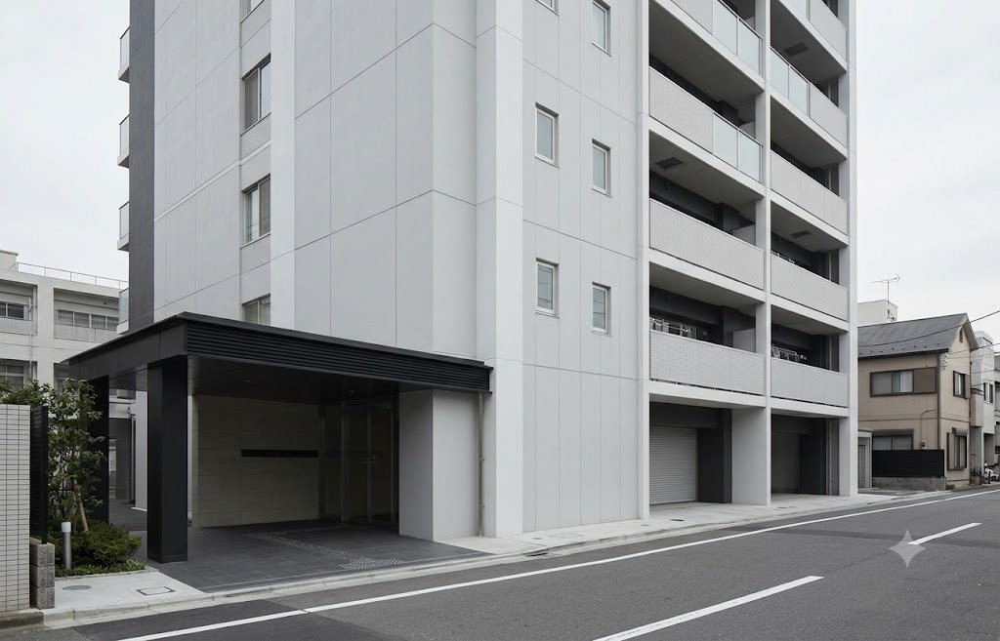

マンション / 土地 / 土地＋建物

PROPERTY VALUE / ONLINE CHECK
土地と建物の価値を、
いま確認する。
売却・建替え・相続を考える前に。住所と物件条件から、現在の参考価格と価格を左右する要因を整理します。
登録不要個人情報の入力なし
約3分分かる項目だけで診断
結果を比較価格帯と根拠を表示
こんな時に
01売却前の相場確認
02建替え計画の整理
03相続資産の把握
OUR VIEW
価格だけでなく、
土地と建物の条件を見る。
不動産の価値は、立地や取引相場だけでは決まりません。接道、土地形状、建物の状態、管理状況など、将来の使い方に関わる条件も価格に影響します。
不動産価値診断は、建設・不動産の実務で確認する項目を順番に整理し、参考価格とその根拠を分かりやすく表示します。
価格帯早期売却 / 想定 / チャレンジ
判断材料近隣事例 / 条件補正 / 市場傾向
TARGET PROPERTY
診断する物件を選ぶ
物件種別ごとに、価値を左右する条件を切り替えて診断します。
PROCESS
診断の流れ
住所・駅・面積などを入力
分かる範囲で精度を高める
参考価格・事例・補正を確認
1種別
2場所
3条件
4結果
STEP 1
まず、物件種別を選ぶ
物件種別に合わせて、必要な入力項目を切り替えます。
✓種別
2場所
3条件
4結果
STEP 2 · 中古マンション
場所と基本条件
現場調査でも最初に確認する項目です。ここまでで一次診断できます。
SITE
住所
対象エリア：未検知
BASE CONDITIONS
必須の基本条件
✓種別
✓場所
3条件
4結果
STEP 3 · 任意
精度を上げる詳細条件
分からない項目はそのままで構いません。入力した分だけ補正に使います。
MANSION
マンション条件
COMMON
共通の見栄え条件
✓種別
✓場所
✓条件
4結果
VALUE REPORT
売却想定価格
4,280万円
成約事例ベースの参考価格です。実際の売却価格を保証するものではありません。
早期売却
4,023万円
想定
4,280万円
チャレンジ
4,408万円
READING
価格の読み方
このエリアは横ばい寄りです。
流通性は標準です。
取引比較 + 条件補正
COMPARABLES
自動選定された取引事例
| 地区 | 面積 | 価格 | ㎡単価 | 時期 |
|---|---|---|---|---|
| 永田町 | 62㎡ | 4,150万円 | 66.9万円/㎡ | 2024年 |
| 平河町 | 68㎡ | 4,480万円 | 65.9万円/㎡ | 2023年 |
| 麹町 | 58㎡ | 3,980万円 | 68.6万円/㎡ | 2024年 |
内訳と補正を見る
成約ベース4,120万円
物件条件補正+2.5%
市場調整1.02倍
悪条件補正0%
回帰予測単価65.8万円/㎡
分析件数48件
駅徒歩+0.8%
所在階+1.0%
日当たり+0.7%